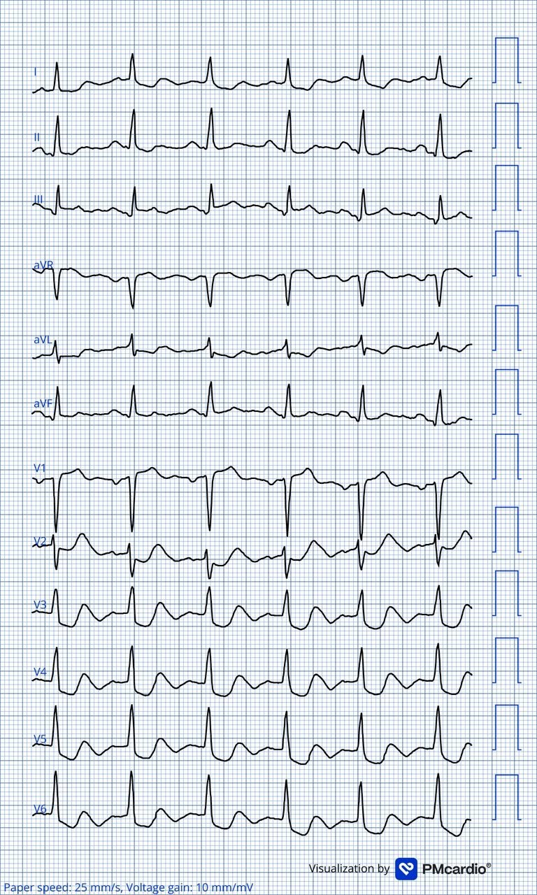
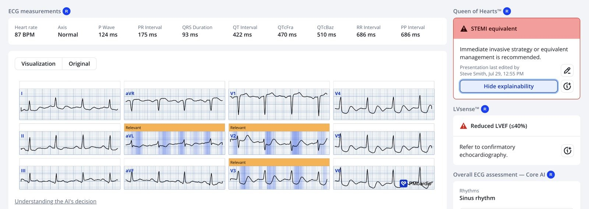
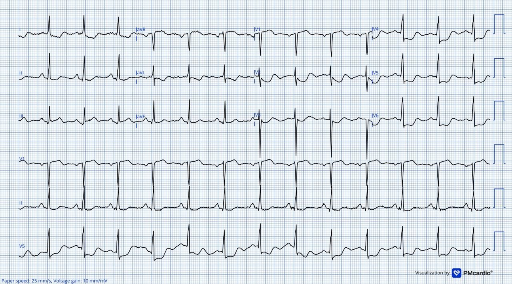
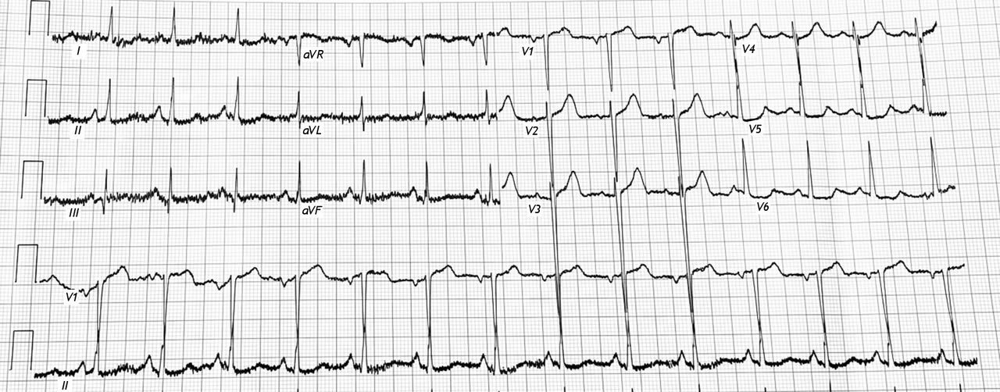
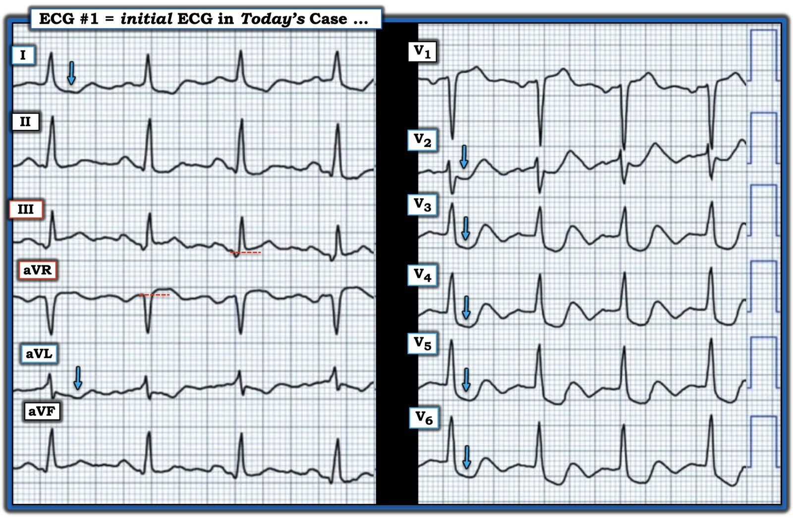

02/08/2026 — Nếu bạn không chịu lắng nghe một sinh viên giỏi, bệnh nhân của bạn có thể gặp nguy (và hãy dùng Queen of Hearts)
Bản dịch tiếng Việt của bài "If you can’t listen to a good student, your patient might be in trouble (and use the Queen of Hearts)" – Dr. Smith’s ECG Blog. Giữ nguyên toàn bộ 5 hình ảnh của bản gốc.

Ca này được Ahmed Marai, một sinh viên y khoa, gửi cho tôi. Ahmed nhận được ca này từ Omer Mohammed, sinh viên y khoa năm thứ năm đến từ Iraq. Omer mới bắt đầu đọc Dr. Smith’s ECG blog cách đây chỉ 2 tháng.
Omer đang ở bệnh viện khi bắt gặp ca này.
Một người đàn ông 70 tuổi đến khoa cấp cứu tại thời điểm khởi đầu (time zero) với đau ngực sau xương ức kéo dài, đã khoảng 6 giờ, kèm khó thở. Ông đang hút thuốc lá. Tiền sử bệnh đáng chú ý gồm tăng huyết áp, bệnh tim thiếu máu cục bộ và suy tim. Khoảng 2 tháng trước, ông từng có một cơn đau ngực tương tự.
Một điện tâm đồ được ghi ngay khi bệnh nhân đến viện.


Bạn nghĩ gì?
Omer xem bản ghi này sau đó và cho rằng đây là hình ảnh Aslanger (Aslanger pattern) kèm OMI thành sau. Tôi đồng ý. Bản ghi này có giá trị chẩn đoán OMI (tắc động mạch vành cấp).
Đây là một dạng lai giữa:
1) Hình ảnh Aslanger (tức là OMI thành dưới, với ST chênh lên (STE) ở duy nhất một chuyển đạo chi là III, đồng thời có thiếu máu cục bộ dưới nội tâm mạc (“SEI”, ST chênh xuống sâu ở V5-6) và
2) OMI thành sau (ST chênh xuống sâu ở V2).
Như vậy đây là sự kết hợp giữa hình ảnh Aslanger với OMI thành sau.
Mô hình AI của PMCardio, Queen of Hearts, nhận ra thành phần dưới/sau, nhưng mô hình AI Queen khác của chúng tôi, mô hình chẩn đoán SEI, chỉ cho điểm 24.6% đối với SEI, và Queen không đánh dấu V5-6:


Kết quả troponin I huyết thanh độ nhạy cao đầu tiên có sau đó 69 phút và là 0.030 ng/mL.
Bình luận về troponin: Giới hạn trên tham chiếu (URL) 0.300 ng/mL là điển hình của troponin thế hệ 2 hoặc 3; troponin thế hệ 4 là thế hệ cuối cùng dùng đơn vị ng/mL. Thế hệ 5 là loại độ nhạy cao, báo kết quả bằng số nguyên với đơn vị ng/L, hoặc đôi khi pg/mL; pg = picogram.)
Bệnh nhân được xử trí theo chẩn đoán hoàn toàn vô giá trị là “NSTEMI.“
Một điện tâm đồ khác được ghi ở phút thứ 120, khi bệnh nhân vẫn còn đau ngực.


Vẫn là hình ảnh đáng báo động như trước
4.5 giờ sau khi đến viện: Ahmed Marai: Kết quả troponin I huyết thanh độ nhạy cao lần thứ hai trả về là 717 ng/L (có vẻ lần này mới thực sự là troponin độ nhạy cao?).
5 giờ 20 phút sau khi đến viện, ông được chuyển vào đơn vị chăm sóc mạch vành thuộc khoa tim mạch với chẩn đoán NSTEMI. Vì đau nhiều, ông được dùng Tramadol để giảm đau.
Smith: Chúng ta đã thấy lỗi này bao nhiêu lần rồi? Điều trị đau do thiếu máu cục bộ bằng thuốc giảm đau thay vì tái tưới máu có liên quan với tử vong cao vì nó che giấu thiếu máu cục bộ!! Chỉ nên dùng morphin hay các thuốc giảm đau khác sau khi đã quyết định đưa bệnh nhân vào phòng thông tim cấp cứu.
Xem bài này: What happens when you give morphine for chest pain in ACS? And what is pseudo-normalization of T-waves?
Cơn đau giảm nhẹ, tuy nhiên không hết hoàn toàn. Bệnh nhân được hẹn thông tim trì hoãn vào 2 ngày sau.
Đây là lúc Omer gặp bệnh nhân lần đầu tiên, khi anh đang thực tập ở đơn vị chăm sóc mạch vành. Anh lập tức nhận ra đây có thể là hình ảnh Aslanger kèm OMI thành sau. Anh đến gặp bác sĩ điều trị của bệnh nhân và nói rằng bệnh nhân có thể cần tái tưới máu ngay. Hóa ra vị bác sĩ này không biết về OMI. Omer bắt đầu giải thích các dấu hiệu điện tâm đồ cho ông và cho ông xem một số ca tương tự trên điện thoại của mình, nhưng vị bác sĩ không bị thuyết phục. Ông nói: “Đây chỉ là Non-STEMI thôi.”
Omer tìm đến một bác sĩ khác, nhưng không tìm được ai chịu lắng nghe anh. Không ai coi trọng anh vì anh là sinh viên, không phải người ra quyết định.
Lúc 8:40 tối hôm đó, một điện tâm đồ khác được ghi. Bệnh nhân vẫn còn đau ngực.


Ngày hôm sau, lúc 5:45 chiều, kết quả troponin I huyết thanh độ nhạy cao lần thứ ba trả về là >15,000 ng/L (15,000 ng/L là giá trị tối đa mà phòng xét nghiệm của bệnh viện đo được). Ngày hôm đó bệnh nhân vẫn tiếp tục đau ngực.
Bệnh nhân vẫn nằm ở đơn vị chăm sóc mạch vành, chờ lịch hẹn vào phòng thông tim ngày hôm sau, nhưng ông đã không thể lên được bàn thông tim vì ông tử vong vào sáng hôm đó, ngay trước khi được đưa vào phòng thông tim.
Bài học rút ra
- NSTEMI là một chẩn đoán vô giá trị. Chẩn đoán NSTEMI giết người. Các tiêu chuẩn milimét giết người
- Sinh viên có thể đọc điện tâm đồ giỏi hơn cả bác sĩ tim mạch. Không cần phải là bác sĩ tim mạch, hay bác sĩ cấp cứu, hay thậm chí là bác sĩ, mới có thể đọc OMI trên điện tâm đồ thành thạo. Người ta cần làm việc chăm chỉ, chú tâm, và bỏ qua uy quyền. Rồi khi gặp một ca bệnh, cần đào sâu vào ca đó, và nhận ra rằng những người lẽ ra phải biết các dấu hiệu điện tâm đồ là gì, và lẽ ra phải biết cách xử trí “NSTEMI” tốt nhất, thường lại thiếu hiểu biết đến mức đáng sợ.
- Thường thì sinh viên, nhân viên cấp cứu ngoài viện và kỹ thuật viên điện tâm đồ giỏi hơn nhiều so với các đồng nghiệp là bác sĩ.
- Xem tại đây các ca do Hans Helseth gửi (khi đó là kỹ thuật viên điện tâm đồ và nay vừa học xong năm thứ nhất trường y) và cả Jack Cahill, một sinh viên y khoa.
- Hãy dùng mô hình AI điện tâm đồ PMCardio Queen of Hearts để chẩn đoán OMI (tắc động mạch vành cấp)
- Morphin:
- Không bao giờ dùng thuốc giảm đau nhóm opiat trừ khi bạn đã quyết định đưa bệnh nhân vào phòng thông tim!! Bạn sẽ che lấp triệu chứng và tưởng rằng điều trị nội khoa đang có tác dụng làm giảm thiếu máu cục bộ, trong khi nó chỉ làm giảm đau!!
Opiat có liên quan với kết cục xấu hơn trong nhồi máu cơ tim.
Xem ca này: A man his 50s with chest pain. What happens when you treat with morphine rather than with reperfusion?
—-Xem nghiên cứu này cho thấy mối liên quan giữa morphin và tử vong trong ACS:
Dùng morphin trong ACS liên quan độc lập với tử vong, với tỷ số chênh 1.4. Meine TJ, Roe M, Chen A, Patel M, Washam J, Ohman E, Peacock W, Pollack C, Gibler W, Peterson E. Association of intravenous morphine use and outcomes in acute coronary syndromes: Results from the CRUSADE Quality Improvement Initiative. Tạp chí Am Heart J, năm 2005;149:1043–1049.
Và một bản tóm tắt mà chúng tôi đã viết:
—-Bracey, A. Meyers HP. Smith SW. Wei L. Singer DD. Singer A. Association between opioid analgesia and delays to cardiac catheterization of patients with occlusion Myocardial Infarctions. Tạp chí Academic Emergency Medicine 27(S1): S220; tháng Năm năm 2020. Tóm tắt 556.
Kết quả chính: Bệnh nhân OMI STEMI(-)
65 (23.9%) bệnh nhân được phát hiện có nhồi máu cơ tim do tắc (OMI) STEMI(-) tại thời điểm thông tim. 45 bệnh nhân OMI STEMI(-) không dùng opioid trước thông tim có thời gian từ cửa đến bóng (door-to-balloon) là 75 phút, so với 684 phút ở 25 bệnh nhân OMI STEMI(-) có dùng opioid trước thông tim.
Các hướng dẫn về ACS nguy cơ cao chỉ được tuân thủ ở 6% bệnh nhân:
Lupu L, Taha L, Banai A, Shmueli H, Borohovitz A, Matetzky S, Gabarin M, Shuvy M, Beigel R, Orvin K, Minha S ’ar, Shacham Y, Banai S, Glikson M, Asher E. Immediate and early percutaneous coronary intervention in very high-risk and high-risk non-ST segment elevation myocardial infarction patients. Tạp chí Clin Cardiol [Internet], năm 2022; Có tại: https://onlinelibrary.wiley.com/doi/10.1002/clc.23781
= = =
==================================
BÌNH LUẬN CỦA TÔI, bởi KEN GRAUER, MD (2/8/2026):
Thật đáng buồn khi một bệnh nhân phải chết thì người ta mới chịu lắng nghe một sinh viên có hiểu biết.
- Là người đã giảng dạy các khái niệm tim mạch cho sinh viên y khoa, bác sĩ nội trú và các đồng nghiệp đang hành nghề trong suốt 3 thập kỷ làm y khoa hàn lâm — điều khiến tôi bận tâm nhất là gặp những người nghĩ rằng mình biết mọi câu trả lời, và vì thế từ chối xem xét các khả năng khác ngoài niềm tin của chính họ. Những người này là những bác sĩ lâm sàng nguy hiểm.
- Những mối lo ngại này đặc biệt phù hợp vào thời điểm hiện nay trong lĩnh vực bệnh nhân đến khám vì CP (đau ngực) mới xuất hiện, và có điện tâm đồ ban đầu không rõ ràng dương tính theo tiêu chuẩn STEMI.
- Trong Dr. Smith’s ECG Blog — Chúng tôi đã đưa ra vô số ca bệnh nhân OMI cấp không thỏa tiêu chuẩn STEMI trên điện tâm đồ — nhưng rồi cuối cùng được thông tim, xác nhận tắc động mạch vành cấp vốn đã rõ ràng từ nhiều giờ (và đôi khi nhiều ngày) trước đó, vì các tiêu chuẩn OMI cấp không được nhận ra đã có mặt trên điện tâm đồ ban đầu.
- Xin nhấn mạnh: Ngay cả trong những ca mà cuối cùng tiêu chuẩn STEMI được thỏa mãn — vẫn có quá nhiều giờ bị lãng phí — vì các tiêu chuẩn OMI có mặt trên điện tâm đồ ban đầu đã bị bỏ qua bởi những bác sĩ lâm sàng cần phải hiểu biết hơn.
- Và đôi khi (như đã xảy ra trong ca bi thảm hôm nay) — thông tim không bao giờ được thực hiện vì bệnh nhân đã tử vong. Như trong ca hôm nay — những cái chết bi thảm này là có thể phòng tránh được. Còn rất nhiều việc phải làm trên quy mô quốc tế cho đến khi chúng ta có thể đào tạo cho đông đảo các bác sĩ lâm sàng cần phải hiểu biết hơn về những khái niệm cơ bản sau đây, vốn thiết yếu trong việc giảng dạy Đau ngực nhập môn (Chest Pain 101).
= = =
Nên đưa gì vào Đau ngực nhập môn (Chest Pain 101)?
Các manh mối lẽ ra đã có thể tránh được cái chết bi thảm trong ca hôm nay vừa nhiều vừa cơ bản. Chúng bao gồm:
- Một bệnh nhân đến ED (khoa cấp cứu) vì CP mới khởi phát mặc nhiên được xếp vào nhóm nguy cơ cao hơn có biến cố tim cấp. Điều này có nghĩa là chúng ta cần ngay lập tức nâng mức độ nghi ngờ về một biến cố tim cấp (tức là chúng ta phải hạ ngay ngưỡng để nhận ra các dấu hiệu điện tâm đồ bất thường cấp tính).
- Ý trên đúng với bất kỳ người lớn nào đến ED vì CP mới khởi phát. Nhưng ca hôm nay còn đáng lo ngại hơn nhiều vì: i) Bệnh nhân lớn tuổi (tức là 70 tuổi); — ii) Bệnh nhân có các yếu tố nguy cơ rất đáng lo ngại (tăng huyết áp; đang hút thuốc, tiền sử suy tim và tiền sử bệnh mạch vành đã biết); — và, iii) CP mới xuất hiện của bệnh nhân này kéo dài (đã kéo dài 6 giờ tại thời điểm đến ED). Do đó — bất cứ điều gì bất thường trên điện tâm đồ lẽ ra đã phải khiến bác sĩ điều trị lập tức cân nhắc nhu cầu thông tim sớm.
- Điện tâm đồ ban đầu hôm nay rõ ràng là bất thường (Xem bên dưới). Theo định nghĩa trong Đau ngực nhập môn (Chest Pain-101) — đối với bất kỳ bác sĩ lâm sàng nào có kỹ năng đọc điện tâm đồ chưa đủ để nhận ra các dấu hiệu bất thường rõ ràng trên điện tâm đồ ban đầu hôm nay:
- i) Cần dùng QOH (Queen Of Hearts) để kiểm tra. Việc này tốn rất ít thời gian — và rất có thể đã ngăn được cái chết bi thảm của bệnh nhân này.
- ii) CP-101 nhấn mạnh rằng troponin ban đầu có thể bình thường (như trong ca hôm nay) — và — nếu có bất kỳ sự không chắc chắn nào về việc bệnh nhân có đang bị biến cố tim cấp hay không — phải ghi lại điện tâm đồ ban đầu trong vòng 10-20 phút tiếp theo (thay vì chờ 120 phút mới ghi lại điện tâm đồ như trong ca hôm nay).
- CẦN PHẢI CÓ PHẢN HỒI trong những ca như ca hôm nay! Hầu như mọi bệnh viện đều nên có một cơ chế xem xét lại việc chăm sóc bệnh nhân (đặc biệt khi bệnh nhân tử vong trong thời gian ngắn sau nhập viện). Dù việc nhìn lại các sự kiện trong ca hôm nay đau lòng đến đâu — Chúng ta cần làm mọi điều có thể để bảo đảm những sự việc này không lặp lại. Điều đó không thể xảy ra nếu những người trực tiếp điều trị bệnh nhân hôm nay không được phản hồi về tất cả những điều lẽ ra phải làm khác đi. Chúng ta cần học hỏi từ những sai lầm đau đớn trong ca hôm nay.
= = =
Điện tâm đồ ban đầu hôm nay …
Trong Hình 1, để dễ đánh giá — tôi đã tái hiện điện tâm đồ ban đầu hôm nay ở định dạng dễ đánh giá hơn.
- Nhịp trên điện tâm đồ #1 là nhịp xoang với khoảng PR bình thường, QRS hẹp — và QTc có vẻ hơi kéo dài. Trục mặt phẳng trán bình thường — và không có lớn buồng tim.
Về Thay đổi Q–R–S–T:
- Có sóng Q chưa rõ ý nghĩa ở mỗi chuyển đạo thành dưới. Dù các sóng Q này không sâu — chúng có vẻ hơi rộng.
- Tăng tiến sóng R cho thấy vùng chuyển tiếp sớm (tức là sóng R trở nên cao hơn độ sâu của sóng S từ sớm, ở giữa chuyển đạo V2 và V3).
Những thay đổi đáng chú ý nhất liên quan đến sóng ST-T:
- Ghi nhận ST chênh lên ở chuyển đạo III, aVR và V1.
- Theo các mũi tên XANH LAM — ghi nhận ST chênh xuống ở ít nhất 7/12 chuyển đạo! (8/12 chuyển đạo nếu tính cả chuyển đạo II). ST chênh xuống này có dạng dốc xuống và với biên độ rõ rệt. Không thể bỏ sót tình trạng ST chênh xuống lan tỏa này!
= = =
Nhận định: Như Dr. Smith đã nêu — điện tâm đồ ban đầu hôm nay của người đàn ông 70 tuổi bị CP mới xuất hiện kéo dài này có giá trị chẩn đoán OMI cấp (= tắc động mạch vành cấp).
- DSI (thiếu máu cục bộ dưới nội tâm mạc lan tỏa) được chứng minh bằng sự hiện diện của ST chênh xuống ở ≥6-to-7 chuyển đạo kèm theo ST chênh lên ở chuyển đạo aVR.
- OMI thành dưới cấp được gợi ý bởi hình ảnh Aslanger (tức là sự hiện diện của DSI kèm theo ST chênh lên ở chuyển đạo III).
- OMI thành sau cấp có lẽ cũng có mặt, do ST chênh xuống rõ rệt ở các chuyển đạo V2,V3,V4.
- Do có ST chênh lên ở chuyển đạo V1 — nên ghi các chuyển đạo bên phải để loại trừ tổn thương thất phải cấp.
- Điểm MẤU CHỐT: Ngay cả khi các bác sĩ điều trị không nhận ra những yếu tố này của DSI + OMI dưới-sau đang diễn ra (có thể kèm tổn thương thất phải) — thì cũng không thể bỏ sót ST chênh xuống lan tỏa rõ rệt.
- T.B. (P.S.): Như Dr. Smith đã nêu — chẩn đoán “NSTEMI” không có ích lợi lâm sàng nào, và tốt nhất là nên tránh. Nhưng nếu các bác sĩ lâm sàng không chịu từ bỏ thuật ngữ này — thì điều bắt buộc là ít nhất họ phải biết rằng: i) Nhiều bệnh nhân được chẩn đoán “NSTEMI” có tắc động mạch vành cấp được xác nhận qua thông tim, cần thông tim và PCI sớm; — và, ii) Bất kể bạn ghi chẩn đoán nhập viện gì vào hồ sơ — ở một bệnh nhân nguy cơ cao hơn đến ED vì CP mới xuất hiện, kéo dài — dấu hiệu điện tâm đồ ST chênh xuống lan tỏa rõ rệt bắt buộc phải thông tim sớm để xác định giải phẫu (và gần như chắc chắn sẽ cần PCI sớm).
= = =
Hình 1: Tôi đã đánh dấu điện tâm đồ ban đầu trong ca hôm nay.


= = =
= = =